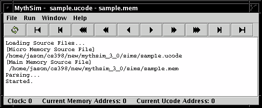

By: Dale Reed and Jason Vroustouris
MythSim is a visual microcode simulator. It can take microcode, along with program code and data stored in memory, and "execute" the code, with the computed results being written to memory. The user can step through the program, observing the values in the registers and other major components of the CPU. MythSim makes it much easier and less time consuming to learn the details needed to succeed in a Computer Architecture course.
MythSim allows us to invent an assembly language of our choosing, and then implement this assembly language within our simulated CPU. Typically the assembly language we create will have elements that any assembly language would have in it, such as add, subtract, logical operations (and, or, not, xor), shift, multiply, memory read, and memory write. We could, however, come up with unique instructions, such as ADD3 ri; which would implement ri = ri + 3; (ADD3 ri is of questionable usefulness.)
By doing this we learn the "nuts and bolts" of how to control the datapath using a control unit of our own devising, which in turn should give a greater appreciation of programming language implementation and efficiency issues. This also helps us to understand how a computer actually works, "under the hood."
Note that the micro programmed control unit could instead be equivalently rendered as a hard-wired control unit. The hard-wired control unit would be faster, however less flexible.
Visit MythSim.org to download the MythSim simulator. Note that you will need to have Java installed. The MythSim site has more information on this. Also take a look at the manual section at the MythSim site.
Once MythSim has been unzipped, you will have a file called mythsim.jar. Selecting this file will launch MythSim, the Java based simulator. In the initial window, select the File menu to load files. To run any "program" you must have two files, a ucode file and a memory file. The default extensions for these are .ucode for the ucode (microcode) file, and .mem for the memory file. Actually any text files will work. Be sure to load the right file in the right field, otherwise you will get a screen full of errors. The format of these two files is described further below.
Once these files are loaded, you will want to bring up some of the windows under the window menu to watch the execution. You can watch the datapath, observe line by line as the microcode is executed, and watch line by line as the contents of main memory is retrieved and used.
The color of a highlights have meaning in MythSim. Red if for micro instructions. Blue is for registers. Green is for values in main memory.
The MythSim Application has a Main Window and a set of Viewing Windows.

The main window contains the main menu bar, tool bar, output screen and status bar.
Main Menu
File - Open and Reload files. Exit simulator.
Run - Reset, step or run the simulator.
Window - Viewing Windows (see next section)
Tool Bar - Duplicates functionality in file and run menus.
Output Screen - Displays error messages and status information about the simulator.
Status Bar - Gives basic feedback on the simulator.
Clock - The Current Clock cycle starting at clock cycle 0.
Current Memory Address - The address to be accessed in main memory.
Current Ucode Address - The address of the current micro instruction.
The viewing windows are located under the window menu. Most of the feedback from MythSim can be found in the main menu under the window menu.. These windows represent the key elements of the simulator such as the input file, datapath and registers. Descriptions of what each window contains, along with example screen shots, are presented below.
|
|||
|
|||
|
|||
|
|||
|
|||
|
Shows the ucode in tabular form. When the reload button is pressed this window is reloaded with the current values in the ucode file. These values can not be changes while a program is running. Each row of this table corresponds to a micro instruction in the ucode file. From a hardware perspective the ucode window shows the values in the memory located in the control-unit. Each row is a control word and each column is a control signal. |
|||
|
Shows the ucode file with the current micro instruction highlighted. The red highlight reminds us that we are dealing with a micro instruction. |
|||
As mentioned above, each "program" is made up of two text files, the memory file and the ucode file. The program to run, essentially an assembly language program, comes from the memory file. The ucode program implements the instruction set used in the assembly language program.
A sample memory file corresponding to the above microprogram file is
guide.mem
Top section of program before the % can be used
for program comments.
Sum immediate constants into r0.
% // Begin code section
// LOAD_IMMEDIATE r0<- 3
0: 3 // values can be decimal..
1: 000010 00 // .. or binary
// LOAD_IMMEDIATE r1<- 2
2: 2
3: 000010 01
// ADD r0 <- r0 + r1
4: 00 01 0000 // binary values can have spaces
5: 000001 00
// HALT
10: 0 // Should now have 5 in r0
11: 000011 00
// End
Notes:
- Comments can be written at the top of the file before the %, which marks the beginning of the code.
- In-line comments can be given using //
- Lines of code must have sequential line numbers given as labels, beginning with the first line at 0. Labels must be followed by a colon ':' as a delimiter.
- Instruction values may be given as either decimal or binary values. Binary values can include spaces to make them more legible.
- Instructions are typically 16 bits, however memory is byte-addressable, so it takes 2 bytes to make a single instruction. The low-order byte is given first in memory, then the high-order byte. This means that if in memory at addresses 4 and 5 we have the bytes:
00010000
00000100
then the corresponding instruction is:
00000100 00010000
Where the right-most bit is the least-significant bit. The fact that each instruction is comprised of 2 bytes is why each instruction is shown as a pair of values, where each value is stored in a single byte.- Instructions can be longer than 16 bits, but the fetch-execute cycle shown in the ucode file below deals with only 16 bit instructions.
- Blank lines are allowed.
A sample microcode file is:
guide.ucode
// ========= FETCH =========
fetch0: a_sel=7, b_sel=7, alu_sel=AND, r6_write, mar_sel=LOAD;
fetch1: a_sel=6, c_in, alu_sel=ADDA, r7_write, ir0_sel=LOAD, read, if wait then goto fetch1 endif;
fetch2: a_sel=7, b_sel=7, alu_sel=AND, r6_write, mar_sel=LOAD;
fetch3: a_sel=6, c_in, alu_sel=ADDA, r7_write, ir1_sel=LOAD, read, if wait then goto fetch3 endif;// ========= OPCODES =========
switch: goto opcode[IR_OPCODE];
opcode[0]: goto fetch0; // no_op
opcode[1]: ri_sel, rj_sel, rk_sel, alu_sel=ADD, goto fetch0; // add (ri <- rj + rk)
opcode[2]: result_sel=IR_CONST8, ri_sel, goto fetch0; // load immediate (ri <- ir_const8)
opcode[3]: goto opcode[3]; // halt
Notes:
- Comments begin with //
- labels are followed by a colon ':' as a delimiter. It is not necessary to have a label on every line.
- Items within each instruction (after the label) are separated by commas ','. A semi-colon ';' is used as the end of instruction delimiter.
- Items listed in each instruction represent setting that particular control line to 1. So for instance
opcode[1]: ri_sel, cin;
would represent setting the ri_sel control line and setting the cin control line to 1. All lines not listed are assumed to be 0.- Blank lines between instructions are allowed.
- A typical microprogram will have three sections:
- The instruction fetch portion, usually about 4 lines (as shown above)
- The opcode selection portion, where each opcode will correspond to exactly one line. This is implemented as a jump table, where the opcode retrieved from the instruction is the offset from the current PC value.
- The opcode extension section. Operations that require more than a single microinstruction must have the remaining instructions given below the opcode jump table. Typically once each instruction is completed it will then branch back up to the beginning of instruction fetch again (e.g. fetch0). There is no opcode extension section in the above example, as all opcodes can be implemented in a single microinstruction.
- The halt instruction is implemented as an unconditional branch to itself.
- Each microcode instruction can be represented as binary values, where each control line that has been set is a value, and the rest are 0. This can be seen in the Ucode Window.